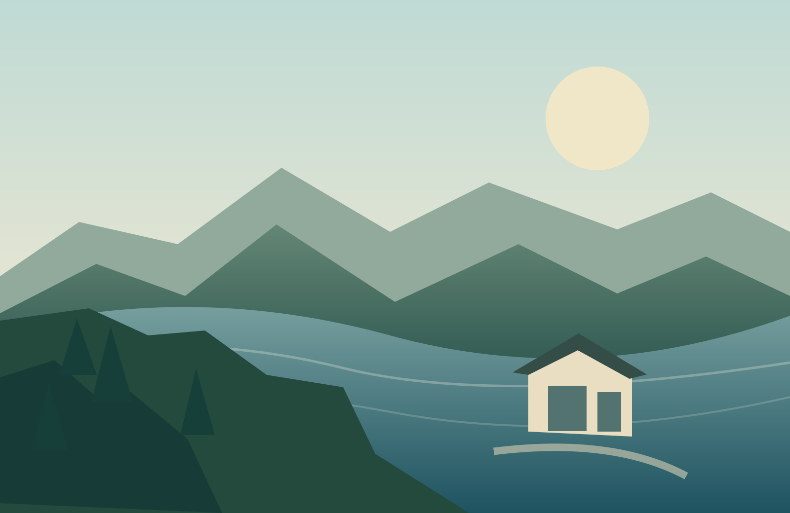
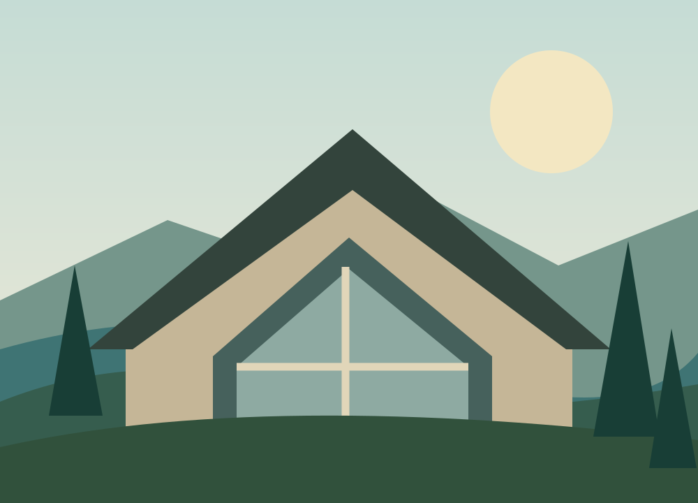
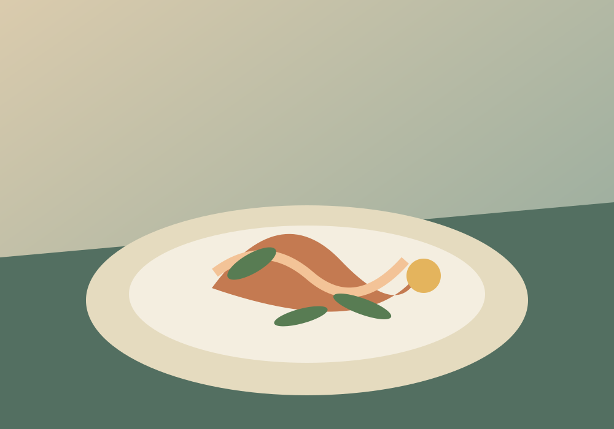
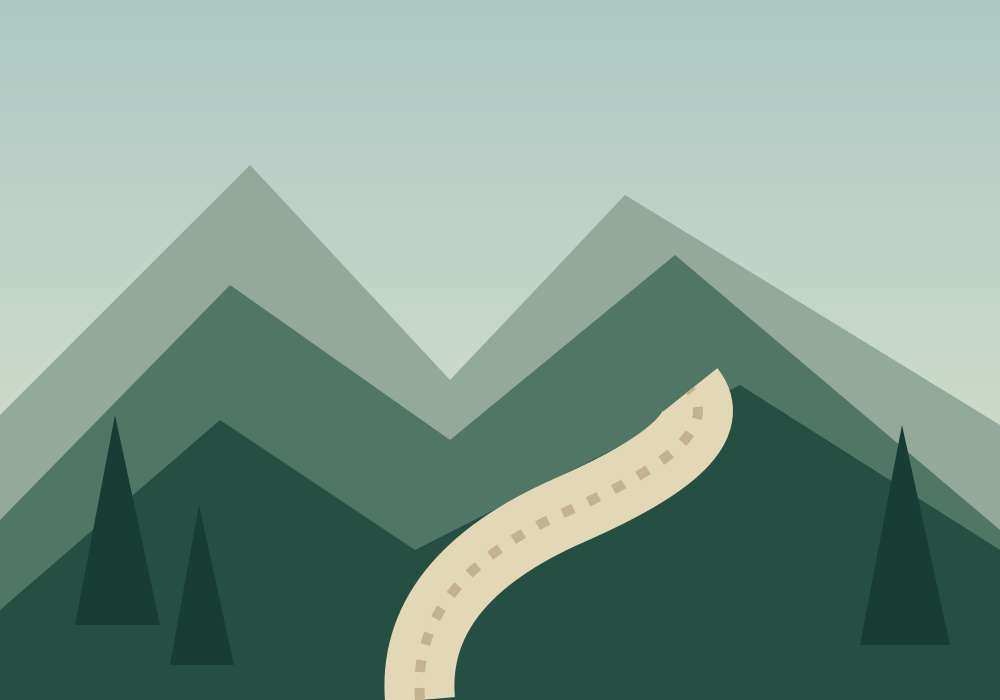

Для двоих
ДОМИК 01
«Бриз»
Компактный домик для двух гостей. Утро у окна, вечер на террасе.

Уютные домики у побережья, неспешные прогулки, местная кухня и время наедине с природой.

БЕРЕГ. ЛЕС. ТИШИНА.«Золотой Мыс» — концепция камерного эко-отеля на побережье Сахалина. Здесь день начинается с вида на воду, а планы легко меняются вслед за погодой.
В основе идеи — бережное отношение к природе, небольшие домики и впечатления, ради которых хочется отложить телефон.
Все показатели и параметры отеля приведены для учебной демонстрации.
Три формата проживания — от тихого отдыха вдвоём до поездки всей компанией.
Компактный домик для двух гостей. Утро у окна, вечер на террасе.
Больше пространства для неспешных завтраков и совместных историй.
Просторная резиденция для путешествия с близкими и долгих разговоров.
Категории и характеристики домиков — демонстрационные. Цены и реальная доступность не заявлены.
Пять принципов, на которых строится концепция отеля.
Идея использования солнечных панелей
Бережное потребление и сортировка
Сезонные продукты региона
Деликатное присутствие в ландшафте
Тропы и маршруты с гидами
Инфографика отражает планируемые решения вымышленного эко-отеля, а не подтверждённые экологические показатели.
Здесь не нужно спешить, чтобы успеть самое интересное.

Рыба, дикоросы и сезонные продукты — идея меню, вдохновлённого Сахалином.
Добавить к плану отдыха ↗
Тропы, наблюдение за природой и прогулки с гидом в концепции отеля.
Как добраться ↗«Иногда лучший план на день — никуда не торопиться».
Вместо вымышленных отзывов гостей мы показываем настроение будущего места. Реальных отзывов у учебного проекта нет.
Точное расположение и трансфер не указаны, поскольку отель существует только как учебная концепция.
В проекте предусмотрены семейные домики. Правила размещения с животными пока не определены.
Тарифы и список включённых услуг ещё не утверждены. Сайт не предлагает реальные продажи.
Выбор сезона зависит от желаемых впечатлений и погоды. Перед настоящей поездкой стоит проверить прогноз и доступность маршрутов.
Нет. Это демонстрационный сайт для университета. Можно подобрать вариант проживания и скачать план поездки, но бронирования не принимаются.
Выберите даты, количество гостей и домик — мы сформируем небольшой план поездки, который можно сохранить на устройство.